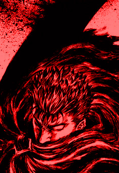
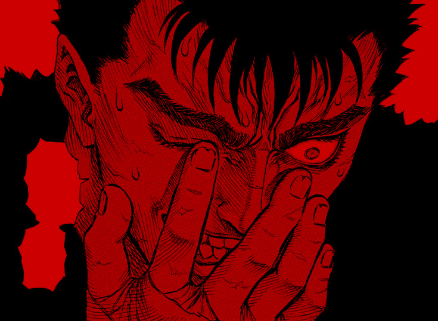

Avtor
GRIFFIT
GUTS AND FRIENDS
HAWK
HAND OF GOD
PACANY
Известный своей строгостью, Гатс – грубый, циничный человек, придерживающийся в целом мрачного взгляда на жизнь. Это следствие непрекращающихся волн страданий и многочисленных предательств с юности, когда почти все основные моменты его жизни со временем стали минимальными. Несмотря на свою осторожную, задумчивую внешность, он демонстрирует более спокойную и сострадательную сторону по отношению к людям, которым он доверяет, выглядя заметно менее нелюдимым и отстраненным, но все же сохраняя свою сухую откровенность. Даже когда его внутренняя тьма гноится глубоко внутри него, и противостоять ее искушению становится все труднее, он сохраняет сочувствие и сострадание, отказываясь полностью отбросить свою человечность.

Пережив Затмение, Гатс становится мстительным, не желая ничего, кроме как выследить и убить любого апостола, которого он встречает, и, что более важно, отомстить Гриффиту и Руке Бога. Он оставляет позади регрессировавшую Каску на два года, чтобы вступить на тропу войны против демонов. На своей двухлетней охоте Гатс становится в значительной степени эгоистичным и антиобщественным, безразличным к страданиям других и отвращением к тем, кого он считает слабым. Его замкнутый характер и враждебность к тем, кто пытается установить с ним связь, проистекают из страха создать новые эмоциональные привязанности; боязнь обзавестись новыми драгоценными товарищами, подобными тем, которых он потерял в Затмении. Со временем, во многом благодаря усилиям Пака, Гатс прекращает свою уединенную борьбу и просит помощи у попутчиков, постепенно налаживая с ними новые дружеские отношения. Несмотря на его первоначальные опасения по поводу проявления привязанности к своим новым товарищам, он начинает ценить узы, которые он связывает с ними, и находит себя благодарным за то, что у них есть индивидуальные сильные стороны, на которые можно положиться.
